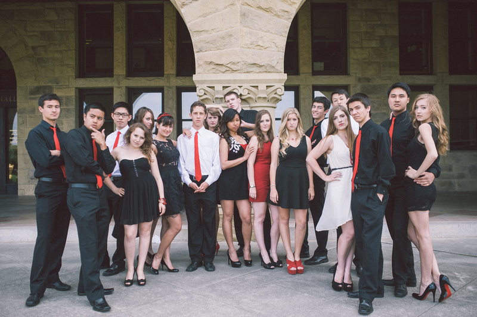

- 
-

-

Audition for Mixed Co!
Auditions for the 2014-2015 school year will be held during the first week of classes on Tuesday, September 23 and Wednesday, September 24.
Come talk to us and sign up for auditions at White Plaza from September 17 to 20th between the hours of 10am and 4pm. We can't wait to meet you!
Who We Are
Mixed Company, Stanford's oldest co-ed a cappella group, performs top-40s, rock, jazz, indie, and everything in between. Mixed Co was recently featured on several Best of College A Cappella and Voices Only compilation albums, and a track from their most recent album, Undeclared, was named one the Recorded Acappella Review Board's "Tracks of the Year".
Last spring, the group embarked on a Service-through-Singing tour to Hawaii, where they performed for retirement homes, crowds on the street, and even a pair of elephants at the Honolulu Zoo! The Co's biggest gig of the year is the anti-Valentines Day extravaganza known throughout campus as "Love Sucks"--through song, skits, and scantily-dressed performers, Mixed Co celebrates and satirizes romance at Stanford. Beyond the rehearsals, gigs, tours, and recordings, Mixed Co is a tight-knit group of friends who share a love for singing and solo-cup red.